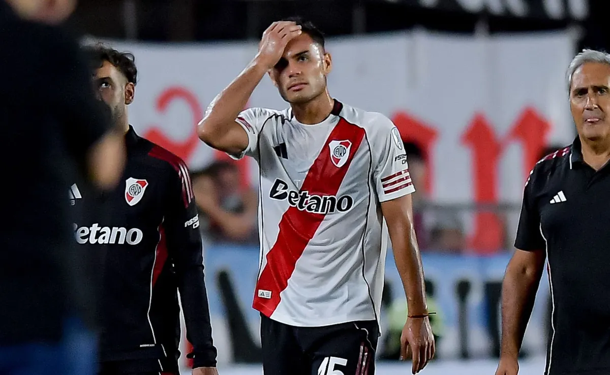
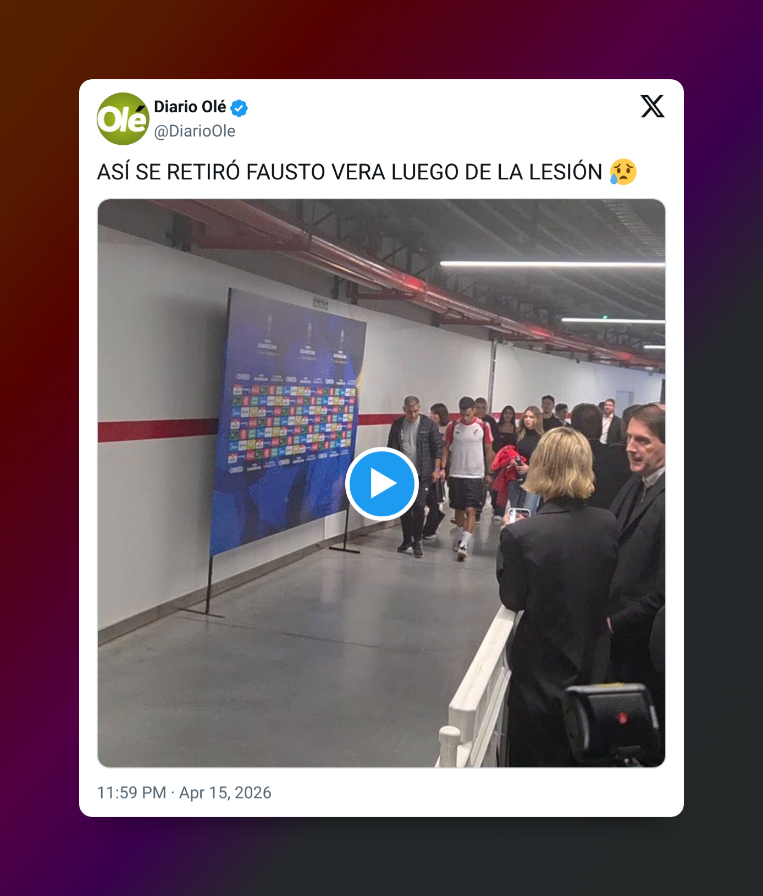

© Getty Images Preocupación por el estado del mediocampista para el domingo.
River sufrió en la noche del miércoles en el Estadio Monumental, pero derrotó derrotó a Carabobo por la segunda fecha de la fase de grupos de la Copa Sudamericana. Pese al resultado positivo, hubo un saldo negativo y fue la lesión que sufrió Fausto Vera, uno de los pocos titulares que dijo presente en el equipo alternativo pensado por Eduardo Coudet. Después del partido se conoció el parte médico preeliminar y el panorama es negativo.
A los 12 minutos del primer tiempo, el mediocampista fue a disputar una pelota dividida y su rodilla derecha chocó con la del delantero Eric Ramírez, provocándole un fuerte dolor. Pese a tener una molestia y ser atendido en el suelo para ser atendido por los médicos del cuerpo técnico, volvió al campo de juego para intentar continuar.
VER TAMBIÉN
Curiosas declaraciones de Kendry Páez post River vs. Carabobo: le metió presión a Coudet para el superclásico
Si bien regresó a la cancha, se lo veía afectado y sin poder trotar de la mejor manera. Al no estar en su mejor forma, a los 18 minutos pidió el cambio y tuvo que abandonar su puesto para ser reemplazado por Aníbal Moreno. Al estar sentado en el banco de suplentes, le colocaron hielo en la zona mientras aguardaba por los primeros estudios.
¿Qué tiene Fausto Vera?
De acuerdo al parte médico preliminar, Fausto Vera tiene un principio de esguince leve en la rodilla derecha. La intención del Chacho y del resto de sus ayudantes es evaluarlo en el entrenamiento de esta tarde en el River Camp de Ezeiza y en el día a día lo seguirán de cerca, pero está claro que al día de hoy es sumamente complicado que pueda llegar al Superclásico.
Por el momento no está completamente descartado, pero la lógica de los tiempos de recuperación para ese tipo de lesión marca posiblemente esté ausente el domingo. Al retirarse de las inmediaciones del Monumental se lo vio rengueando y sin poder caminar correctamente, siendo una pequeña señal de que no se trataba de un simple golpe y que lo retiraron por precaución. “El médico me dijo que no es nada grave“, soltó Coudet en conferencia, tratando de sembrar algo de optimismo.

VER TAMBIÉN
Los puntajes de River vs. Carabobo por la Copa Sudamericana: Uno por Uno
¿Quién jugaría en lugar de Fausto Vera?
A la espera de las próximas prácticas, Coudet deberá plantearse si cambia nombre por nombre en la misma posición, ofreciéndole una chance a Kevin Castaño de ocupar el lugar, o renovar el esquema sumando a un atacante más, como sería Kendry Páez. Por ahora no hay indicios acerca de su decisión y los entrenamientos serán clave.